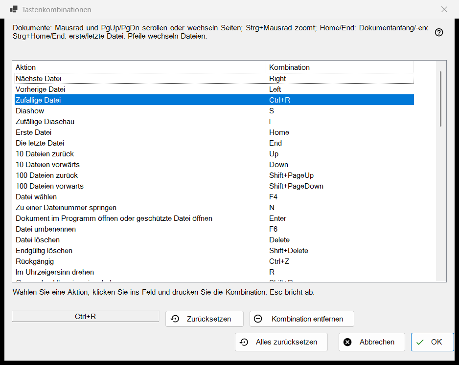
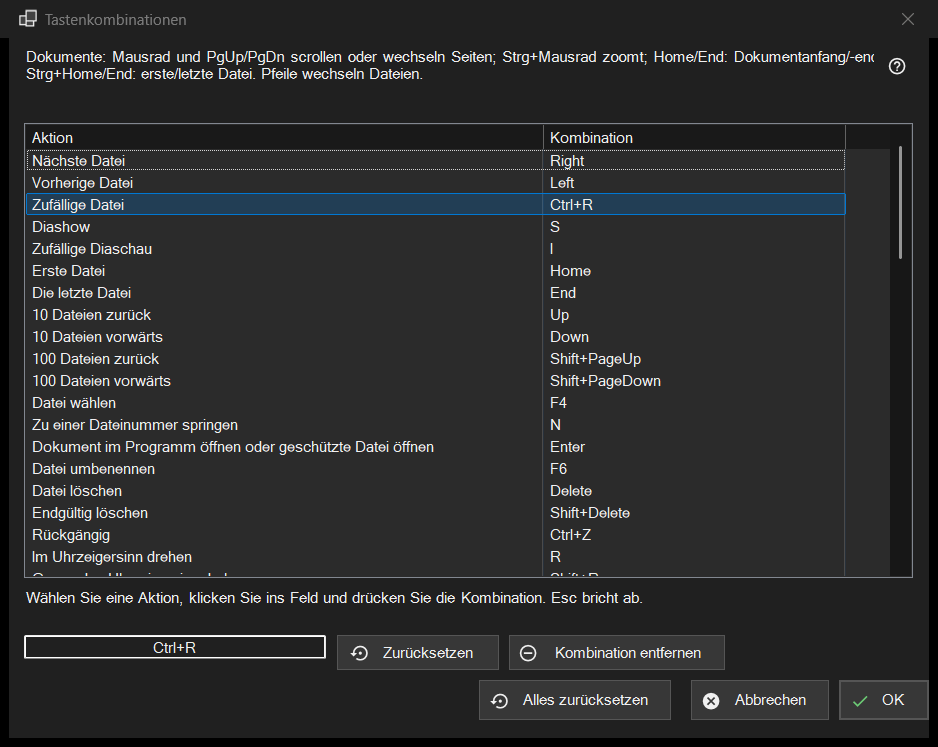

Tastenkombinationen
Verwendungszweck
Die Liste aller Viewer-Aktionen, deren Taste sich ändern lässt, mit der Kombination, auf die sie jetzt reagieren. Sie öffnet sich unter Einstellungen, Seite Dateien und System, mit der Schaltfläche Einrichten.. in der Zeile Tastenkombinationen. Das Fenster bearbeitet eine Kopie: Nichts erreicht Ihr Profil, bevor Sie auf OK drücken.


In dieser Reihenfolge
- Öffnen Sie die Einstellungen, gehen Sie zu Dateien und System und drücken Sie auf Einrichten.. in der Zeile Tastenkombinationen.
- Wählen Sie in der Liste eine Aktion.
- Klicken Sie in das Feld unter der Liste und drücken Sie die neue Kombination.
- Gehört sie schon einer anderen Aktion, wählen Sie Tastenkürzel tauschen, Dort entfernen oder Abbrechen.
- Wiederholen Sie das für weitere Aktionen; nutzen Sie bei Bedarf Zurücksetzen, Kombination entfernen oder Alles zurücksetzen.
- Drücken Sie OK, um die Änderungen zu behalten, oder Abbrechen, um sie alle zu verwerfen.
Die Elemente
Die Liste Aktion und Kombination
Jede Zeile ist eine Aktion mit ihrer Hauptkombination; eine Aktion ohne Taste zeigt Nicht zugewiesen. Die zehn Ordnerplätze erscheinen als In Ordner 1..0 verschieben und In Ordner 1..0 kopieren (Zifferntasten verschieben, Shift plus eine Ziffer der oberen Tastenreihe kopiert). Manche Aktionen reagieren zusätzlich auf Standardtasten (Nächste Datei reagiert auch auf Leertaste und PageDown). Die Liste zeigt nur die Hauptkombination, aber sobald Sie einer Aktion eine neue Kombination geben, funktionieren alle ihre alten Standardtasten nicht mehr. Der Text über der Liste nennt feste Tasten für Dokumente (Mausrad, PgUp/PgDn, Home/End, Pfeile), die nicht in der Liste stehen. Die Aktion «Geplante Vorgänge» öffnet das Fenster «Geplante Vorgänge» von Share Manager; sie hat standardmäßig keine Taste - weisen Sie ihr eine zu, um das Fenster über die Tastatur zu öffnen.
Eine Kombination aufzeichnen
Wählen Sie eine Zeile, klicken Sie dann auf das Feld unter der Liste (oder doppelklicken Sie die Zeile) und drücken Sie die Tasten, auf Wunsch mit Ctrl, Shift oder Alt. Das Feld erfasst die ganze Kombination auf einmal, und eine Zusatztaste allein ist keine Kombination. Esc verlässt das Feld, ohne etwas aufzuzeichnen. Die Änderung erscheint sofort in der Liste, steckt aber noch nur in der Arbeitskopie.
Tasten, die sich nicht zuweisen lassen
F1, F10, F11, Esc, die Windows-Tasten, die Menütaste, Alt+Tab, Alt+F4 und Ctrl+Alt+Delete gehören Windows oder dem Programm. Drücken Sie eine davon, erscheint: Diese Kombination ist vom System oder vom Programm belegt und kann nicht zugewiesen werden. Es ändert sich nichts.
Eine Kombination, die schon vergeben ist
Die Frage nennt den Besitzer: Die Kombination X gehört bereits zu der anderen Aktion. Tastenkürzel tauschen gibt dieser Aktion die Kombination, die die aktuelle bisher hatte (möglicherweise keine). Dort entfernen lässt die andere Aktion bei Nicht zugewiesen und gibt Ihnen die Kombination. Abbrechen ändert nichts.
Zurücksetzen, Kombination entfernen und Alles zurücksetzen
Zurücksetzen gibt der gewählten Aktion ihre Standardtaste zurück. Kombination entfernen lässt die Aktion ganz ohne Taste, sodass auch ihre Standardtaste nicht mehr funktioniert; so schalten Sie eine Taste ab. Alles zurücksetzen fragt: Alle Tastenkombinationen auf die Standardwerte zurücksetzen? Auf Standard zurücksetzen verwirft alle Ihre Änderungen im Fenster; Abbrechen behält sie.
OK und Abbrechen
OK speichert die ganze Zuordnung im Profil, und der Viewer verwendet sie sofort. Abbrechen schließt das Fenster und lässt das Profil genau so, wie es war. Tasten für Video und Audio (Pause, Stummschalten, Lautstärke, Spulen, Tempo, Einzelbild, Spuren) wirken auf das gerade laufende Medium.